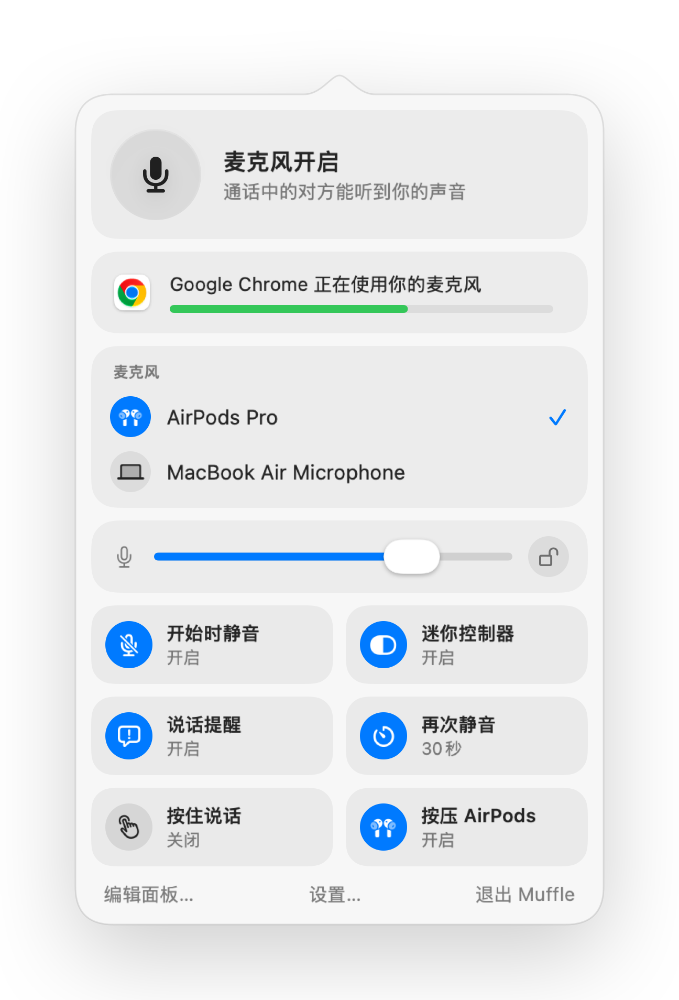

如何在 Mac 上的任意浏览器标签页中静音通话
越来越多的会议和通话直接在浏览器中进行，例如 Google Meet、网页版 Teams，以及 SoWork、Gather、Whereby、Jitsi 等远程办公虚拟空间。每个平台都有各自的静音按钮和快捷键，而且只有在当前标签页处于最前端时才起作用。
此外，Mac 上的浏览器也会忽略 AirPods 的耳机柄静音按压操作。Muffle 可以截获该操作或使用全局快捷键，一次性将所有标签页的麦克风直接静音。
静音任意网页通话
- 1
安装 Muffle 并允许访问麦克风。
- 2
在任意浏览器标签页中进入通话或会议。
- 3
在任何 App 或标签页中，按压 AirPods 耳机柄或按 Control-Option-M 即可静音。
- 4
观察菜单栏图标：红色即代表麦克风已关闭。

- 远程办公虚拟办公室往往需要持续打开麦克风数小时。建议开启悬浮迷你控制器，随时掌握自己的发声状态。
- “静音时说话提醒我”功能会在你处于静音状态开口讲话时发出提醒。
常见问题
为什么在 Chrome 中按压 AirPods 耳机柄无法静音？
Chrome 不支持针对网页调用 macOS 原生的 AirPods 静音手势。Muffle 会代替浏览器接收该按压操作，并直接将麦克风静音。
它支持 SoWork 和 Gather 吗？
支持。只要 Muffle 关闭麦克风，任何正在调用麦克风的网页都会完全静音。